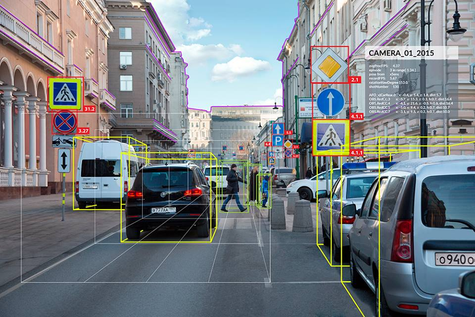
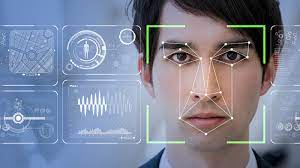
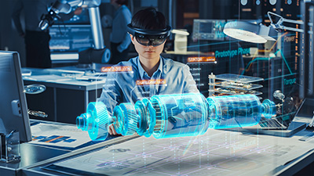
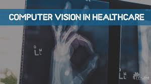
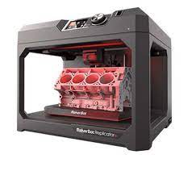

<!DOCTYPE html>
<html lang="en">
<head>
    <meta charset="UTF-8">
    <meta http-equiv="X-UA-Compatible" content="IE=edge">
    <meta name="viewport" content="width=device-width, initial-scale=1.0">
    <link rel="stylesheet" href="firstaistyle.css">
    <link rel="stylesheet" href="https://cdnjs.cloudflare.com/ajax/libs/font-awesome/6.3.0/css/all.min.css" 
    integrity="sha512-SzlrxWUlpfuzQ+pcUCosxcglQRNAq/DZjVsC0lE40xsADsfeQoEypE+enwcOiGjk/bSuGGKHEyjSoQ1zVisanQ==" crossorigin="anonymous" referrerpolicy="no-referrer" />
    <link rel="stylesheet" href=
"https://maxcdn.bootstrapcdn.com/bootstrap/4.0.0/css/bootstrap.min.css"
        integrity=
"sha384-Gn5384xqQ1aoWXA+058RXPxPg6fy4IWvTNh0E263XmFcJlSAwiGgFAW/dAiS6JXm"
        crossorigin="anonymous">
    <title>Web Journal</title>
</head>
<body>
    <div class="sidebar">
        <h3><b>OTHER EMERGING TECHNOLOGY</b></h3>
        <ul>
          <li>
            <a href="other.html">
            <span><b>Nanotechnology</b></span>
          </a>
        </li>
        <hr>
        <li>
          <a href="biotech.html">
          <span><b>Biotechnology</b></span>
        </a>
      </li>
      <hr>
      <li>
        <a href="blockchain.html">
        <span><b>Blockchain Tech</b></span>
      </a>
    </li>
    <hr>
    <li>
      <a href="computing.html">
      <span><b>Computing Tech<br>Computer Vision<br>Embedded System<br>Cybersecurity<br>Printing</b></span>
    </a>
  </li>
  <hr>
  <li>
    <a href="index.html">
    <span><b>Home</b></span>
  </a>
</li>
<hr>
<li>
  <a href="about.html">
  <span><b>About</b></span>
</a>
</li>
  </ul>

    
    </div>
       <div class="main">


        <h2> <B>What is Cloud Computing?</B></h2>
        <p>Cloud computing is a means of networking remote servers that are hosted on the Internet. Rather 
            than storing and processing data on a local server, or a PC's hard drive, one of the following three 
            types of cloud infrastructure is used</p>
            <p>The first type is a public cloud. Here a third-party provider manages the servers, applications, and 
                storage much like a public utility. Anyone can subscribe to the provider’s cloud service, which is 
                usually operated through their own data center.</p>
                <p>The third option is a hybrid cloud. Here private clouds are connected to public clouds, allowing 
                    data and applications to be shared between them. Private clouds existing alone can be very limiting, 
                    and a hybrid offers a business more flexibility. Often a hybrid cloud includes multiple service 
                    providers. Hybrids can offer more computing capacity for a business application when the need 
                    for its spikes. This sudden expansion into the public cloud is known as cloud bursting. Hybrids 
                    also enable applications to keep sensitive client data in a private cloud but connect to end-user 
                    software in a public cloud.
                    </p>
                    <p> Platform as 
                        a Service (PaaS) offers a complete web development environment, without the worry of the hardware 
                        that runs it. Finally, Software as a Service (SaaS) allows access to cloud-based apps, usually through 
                        a web browser interface. SaaS is the top of the stack. Cloud computing has been around since 2000. 
                        Yet it’s only in the last 10 years that major players like IBM, Amazon, and Google have offered 
                        commercially viable, high-capacity networks</p>


                        <h2><b>What are Advantages and Disadvantages</b></h2>
                        <div class="container">
                       
                          <div class="row">
                              <div class="col-lg-6 mb-4">
                                  <div class="card">
                                      <div class="card-body">
                                          <h5 class="card-title"><b>Advantages</b></h5>
                                          <p class="card-text">
                                            Well, much like with any utility -a business benefits from economy of scale, which means cheap 
                                            computing power. Because a cloud provider’s hardware and software are shared, there’s no need 
                                            for the initial costly capital investment. And it goes much further than that. Businesses save on the 
                                            electricity required 24/7 to power and cool that computing infrastructure. In effect, energy costs 
                                            are shared
                                          </p>
                                          <p class="card-text">
                                            It gets better. Cloud providers have vast resources of computing power at their fingertips. They 
                                            can allocate these whenever required with just a few mouse clicks. Cloud providers source on a 
                                            global scale, so they can deliver the precise bandwidth, storage and power business needs when it 
                                            needs it.
                                            
                                          </p>
                                          <p class="card-text">
                                            The cloud allows you and multiple users to access your data from any location. Smartphone, 
                                            laptop, desktop, wherever you are, you can access the data you need at any time.
                                            With cloud computing a business processes its data more efficiently, increasing productivity. 
                                            Maintenance is much cheaper, often free, so reliability is rarely a worry. Cloud computing allows 
                                            CEOs to focus on running their business.
                                            
                                          </p>
                                          
                    
                                      </div>
                                  </div>
                              </div>
                              <div class="col-lg-6 mb-4">
                                  <div class="card">
                                 
                    
                                      <div class="card-body">
                                          <h5 class="card-title"><b>Disadvantages</b></h5>
                                          <p class="card-text">
                                            <p> <b>Downtime</b></p>
                                          <P>Businesses receive cloud computing services only through the Internet. When there is an internet outage or weak connectivity, services get interrupted and this increases downtime. Therefore, one of the major criticisms of cloud computing is its high dependency on the Internet.</P>
                                          </p>
                                          <p><b>Security and Privacy</b></p>
                                          <p>Data security and privacy threats are other disadvantages of cloud computing. According to a survey, nearly 98% of companies using cloud computing services experienced at least one data breach from 2020 to 2022. Inadequate cloud security measures lead to data leakage over cloud networks which can result in intellectual property theft, contract breaches, and malware attacks. Hackers can also control how companies provide services to their customers or end-users. This leads to a loss of business opportunities and a decrease in revenue.</p>
                                         <p><b>Cost Concern</b></p>
                                         <p>Costs are both a significant advantage and disadvantage of cloud computing. While it helps small businesses avail quality services without investing large amounts to set up IT infrastructure, it can also increase expenditure for companies as there are several hidden costs involved which emerge at a later stage. These include data transfer, cloud utilization, and data migration costs.</p>
                                      </div>
                                  </div>
                              </div>
                          </div>
                      </div>

                      <h2> <B>What is Quantum Computing?</B></h2>
                      <p>Cloud computing is a means of networking remote servers that are hosted on the Internet. Rather 
                          than storing and processing data on a local server, or a PC's hard drive, one of the following three 
                          types of cloud infrastructure is used</p>

                          <div class="row_1">
                            
                            <div class="column_1">
                              
                              <div class="card_1" style="width: 18rem;">
                                
                                
                              </div>
                            
                            </div>
                            <div class="column_1">
                              
                              <div class="card_1" style="width: 18rem;">
                                
                               
                              </div>
                            
                            </div>
                            <div class="column_1">
                              
                              <div class="card_1" style="width: 18rem;">
                                
                               
                              </div>
                            
                            </div>


                            </div>  
                            <p>Qubit is short for a sequence of quantum bits. With a classic computer, data is stored in tiny 
                              transistors that hold a single bit of information, either the binary value of 1 or 0. With a quantum 
                              computer, the data is stored in qubits. Thanks to the mechanics of quantum physics, where 
                              subatomic particles obey their own laws, a qubit can exist in two states at the same time. This 
                              phenomenon is called superposition</p>
                              <p>So, a qubit can have a value of 1, 0, or some value between. Two qubits can hold even more values. 
                                Before long, you are building yourself an exponentially more powerful computer the more qubits 
                                you add</p>
                                <p>Quantum computer theory was first rooted in the 1980s and only now are the first rudimentary 
                                  machines being constructed. Quantum computers are big machines, reminiscent of the old 
                                  mainframe computers of the 1960s. One serious logistical problem is the need for deep-freezing 
                                  of the superconducting circuits. Only at sub-zero temperatures can the qubits maintain a constant, 
                                  predictable superposition. Heating up qubits can result in calculation errors.</p>
                                  <p><b>Advantages of quantum computing</b></p>
                                  <p>Getting a quantum computer to function usefully is an exciting prospect for scientists. Their 
                                    gargantuan computing power would allow them to crunch very long numbers. They would be able 
                                    to make complex calculations that would only overwhelm classic computers.</p>
                                    <p>Accessing a cloud-based quantum computer combines the benefits of both technologies 
                                      exponentially. Quantum computing could help in the discovery of new drugs, by unlocking the 
                                      complex structure of chemical molecules. Other uses include financial trading, risk management,and supply chain optimization. With its ability to handle more complex numbers, data could be 
                                      transferred over the internet with much safer encryption.</p>


                                      <h2> <B>What is Autonomic computing</B></h2>
                                      <p>Autonomic computing (AC) is an approach to address the complexity and evolution problems in 
                                        software systems. It is a self-managing computing model named after, and patterned on, the human 
                                        body's autonomic nervous system. An autonomic computing system would control the functioning 
                                        of computer applications and systems without input from the user, in the same way, that the 
                                        autonomic nervous system regulates body systems without conscious input from the individual. 
                                        The goal of autonomic computing is to create systems that run themselves, capable of high-level 
                                        functioning while keeping the system's complexity invisible to the use</p>
                <p><b>Autonomic systems/applications exhibit eight defining characteristics: </b></p>
                <ul>
                  <li><b>Self-Awareness</b>: An autonomic application/system “knows itself” and is aware of its state 
                    and its behaviors.</li>
                    <li><b>Self-Configuring</b>: An autonomic application/system should be able to configure and 
                      reconfigure itself under varying and unpredictable conditions.</li>
                      <li><b>Self-Optimizing</b>: An autonomic application/system should be able to detect suboptimal 
                        behaviors and optimize itself to improve its execution.</li>
                        <li><b>Self-Healing</b>: An autonomic application/system should be able to detect and recover from 
                          potential problems and continue to function smoothly.</li>
                          <li><b>Self-Protecting</b>: An autonomic application/system should be capable of detecting and 
                            protecting its resources from both internal and external attacks and maintaining overall 
                            system security and integrity. </li>
                            <li><b>Context-Aware</b>: An autonomic application/system should be aware of its execution 
                              environment and be able to react to changes in the environment.</li>
                              <li><b>Open</b>: An autonomic application/system must function in a heterogeneous world and 
                                should be portable across multiple hardware and software architectures. Consequently, it 
                                must be built on standard and open protocols and interfaces. </li>
                                <li><b>Anticipatory</b>: An autonomic application/system should be able to anticipate to the extent 
                                  possible, its needs and behaviors and those of its context, and be able to manage itself 
                                  proactively
                                  </li>

                </ul>


                <h2> <B>What is Computer Vision</B></h2>
                <p>It is an interdisciplinary scientific field that deals with how computers can be made to gain a highlevel understanding of digital images or videos. From the perspective of engineering, it seeks to 
                  automate tasks that the human visual system can do.</p>
                  <p>Computer vision tasks include methods for acquiring, processing, analyzing and understanding 
                    digital images, and extraction of high-dimensional data from the real world in order to produce 
                    numerical or symbolic information, e.g. in the forms of decisions. Understanding in this context 
                    means the transformation of visual images (the input of the retina) into descriptions of the world 
                    that can interface with other thought processes and elicit appropriate action</p>


                  </div>

                    <div class="row_1">
                      <p><b>Application of Computer Vision</b></p>
                      <div class="column_1">
                        
                        <div class="card_1" style="width: 18rem;">
                          
                          <div class="card-body">
                            <p class="card-text"><b>Self-Driving Cars</b><br>
                              With the use of computer vision, autonomous vehicles can understand their environment. Multiple cameras record the environment surrounding the vehicle, which is then sent into computer vision algorithms that analyzes the photos in perfect sync to locate road edges, decipher signposts, and see other vehicles, obstacles, and people. Then, the autonomous vehicle can navigate streets and highways on its own, swerve around obstructions, and get its passengers where they need to go safely                  
                            </p>
                          </div>
                        </div>
                      
                      </div>
                  
                      <div class="column_1">
                        <div class="card_1" style="width: 18rem;">
                          
                          <div class="card-body">
                            <p class="card-text"><b>Facial Recognition</b><br>Facial recognition programs, which use computer vision to recognize individuals in photographs, rely heavily on this field of study. Facial traits in photos are identified by computer vision algorithms, which then match those aspects to stored face profiles. In order to verify the identity of the people using consumer electronics, face recognition is increasingly being used. Facial recognition is used in social networking applications for both user detection and user tagging. For the same reason, law enforcement uses face recognition software to track down criminals using surveillance footage.</p>       </div>
                        </div>
                      
                      </div>
                  
                      <div class="column_1">
                        <div class="card_1" style="width: 18rem;">
                          
                          <div class="card-body">
                            <p class="card-text"><b>Augmented reality</b><br> which allows computers like smartphones and wearable technology to superimpose or embed digital content onto real-world environments, also relies heavily on computer vision. Virtual items may be placed in the actual environment through computer vision in augmented reality equipment. In order to properly generate depth and proportions and position virtual items in the real environment, augmented reality apps rely on computer vision techniques to recognize surfaces like tabletops, ceilings, and floors.

                            </p>
                          </div>
                        </div>
                      
                      </div>  
                      <div class="column_1">
                        <div class="card_1" style="width: 18rem;">
                          
                          <div class="card-body">
                            <p class="card-text"><b>Healthcare</b><br> Computer vision has contributed significantly to the development of health tech. Automating the process of looking for malignant moles on a person's skin or locating indicators in an x-ray or MRI scan is only one of the many applications of computer vision algorithms.
                
                             </p>
                          </div>
                        </div>
                      
                      </div> 
                      </div>


<div class="main">
  <div class="container .con">
    <div class="row">
       
           <div class="col-lg-6 mb-4">
            <div class="card">
              <iframe width="500" height="315" src="https://www.youtube.com/embed/HS1wV9NMLr8" title="YouTube video player" frameborder="0" allow="accelerometer; autoplay; clipboard-write; encrypted-media; gyroscope; picture-in-picture; web-share" allowfullscreen></iframe>
                <div class="card-body">
                    <h6 class="card-title">NVIDIA DRIVE Labs Ep. 14_ How AI Helps Autonomous Vehicles See Outside the Box</h6>
                    
                   
                </div>
            </div>
        </div>
        <div class="col-lg-6 mb-4">
            <div class="card">
              <iframe width="500" height="315" src="https://www.youtube.com/embed/GvRCXGBXiwI" title="YouTube video player" frameborder="0" allow="accelerometer; autoplay; clipboard-write; encrypted-media; gyroscope; picture-in-picture; web-share" allowfullscreen></iframe>
                <div class="card-body">
                    <h6 class="card-title">5 Real World Applications of Computer Vision _ Learn Artificial Intelligence</h6>
                    
                   
                </div>
            </div>
        </div>
    </div>
</div>

<h2> <B>What is Embedded System</B></h2>
<p>It is a controller with a dedicated function within a larger mechanical or electrical system, often 
  with real-time computing constraints. It is embedded as part of a complete device often including 
  hardware and mechanical parts. Embedded systems control many devices in common use 
  today. Ninety-eight percent of all microprocessors manufactured are used in embedded systems.
  </p>
 

  <h2><b>What are Advantages and Disadvantages</b></h2>
  <div class="container">
 
    <div class="row">
        <div class="col-lg-6 mb-4">
            <div class="card">
                <div class="card-body">
                    <h5 class="card-title"><b>Advantages</b></h5>
                    <p class="card-text">
                      <ol>
                        <li>Easily Customizable </li>
                            <li>Low power consumption</li>
                              <li>Low cost
                                </li>
                                <li>Enhanced performance</li>
                                  
                      </ol>
                    </p>

                </div>
            </div>
        </div>
        <div class="col-lg-6 mb-4">
            <div class="card">
           

                <div class="card-body">
                    <h5 class="card-title"><b>Disadvantages</b></h5>
                    <p class="card-text">
                      <ol>
                        <li>High development effort </li>
                          <li>Larger time to market</li>
                             
                      </ol>
                    </p>
                   
                </div>
            </div>
        </div>
    </div>
</div>

<p><b>Basic Structure of an Embedded System</b></p>
<ul>
  <li><p><b>Sensor</b> − It measures the physical quantity and converts it to an electrical signal which can 
    be read by an observer or by any electronic instrument like an A2D converter. A sensor 
    stores the measured quantity to the memory.
    </p></li>
    <li><p><b>A-D Converter </b>− An analog-to-digital converter converts the analog signal sent by the 
      sensor into a digital signal.
      </p></li>
      <li><p><b>Processor & ASICs</b> − Processors process the data to measure the output and store it to 
        the memory.
        </p></li>
        <li><p><b>D-A Converter</b> − A digital-to-analog converter converts the digital data fed by the 
          processor to analog data
          </p></li>
          <li><p><b>Actuator </b>− An actuator compares the output given by the D-A Converter to the actual 
            (expected) output stored in it and stores the approved output.
            </p></li>
</ul>


<h2> <B>What is Cybersecurity</B></h2>
<p>It is the protection of computer systems from the theft of or damage to their hardware, software, 
  or electronic data, as well as from the disruption or misdirection of the services they provide
  </p>
 


<p><b>Cybersecurity Measures</b></p>
<ul>
  <li><p><b></b>Staff awareness training:</b> - Human error is the leading cause of data breaches, so you 
    need to equip staff with the knowledge to deal with the threats they face. Training courses 
    will show staff how security threats affect them and help them apply best-practice advice 
    to real-world situations.</p></li>
    <li><p><b>Application security:</b> - Web application vulnerabilities are a common point of intrusion 
      for cybercriminals. As applications play an increasingly critical role in business, it is vital 
      to focus on web application security</p></li>
      <li><p><b>Network security:</b> - Network security is the process of protecting the usability and 
        integrity of your network and data. This is achieved by conducting a network penetration 
        test, which scans your network for vulnerabilities and security issues</p></li>
        <li><p><b>Leadership commitment:</b> - Leadership commitment is the key to cyber resilience. 
          Without it, it is very difficult to establish or enforce effective processes. Top management 
          must be prepared to invest in appropriate cybersecurity resources, such as awareness 
          training.</p></li>
          <li><p><b>Password management: </b>- Almost half of the UK population uses ‘password’, ‘123456’ 
            or ‘qwerty’ as their password. You should implement a password management policy that 
            provides guidance to ensure staff create strong passwords and keep them secure.</p></li>
</ul>


<p><b>Types of cybersecurity threats</b></p>
<ul>
  <li><p><b>Ransomware:</b> - It is a type of malicious software. It is designed to extort money by 
    blocking access to files or the computer system until the ransom is paid. Paying the ransom 
    does not guarantee that the files will be recovered or the system restored</p></li>
    <li><p><b>Malware</b>:- itis a type of software designed to gain unauthorized access or to cause damage 
      to a computer[64].</p></li>
      <li><p><b>Social engineering:</b> - it is a tactic that adversaries use to trick you into revealing sensitive 
        information. They can solicit a monetary payment or gain access to your confidential data. 
        Social engineering can be combined with any of the threats listed above to make you more 
        likely to click on links, download malware, or trust a malicious source</p></li>
        <li><p><b>Phishing</b>: - it is the practice of sending fraudulent emails that resemble emails from 
          reputable sources. The aim is to steal sensitive data like credit card numbers and login 
          information. It’s the most common type of cyber-attack. You can help protect yourself 
          through education or a technology solution that filters malicious emails</p></li>
          
</ul>

<h2> <B>Additive manufacturing (3D Printing)</B></h2>
<p>Are “3D printing” and “additive manufacturing” (AM) the same thing? In general, we know that 
  terms stretch over time to include more than just their default meanings. Whatever the name, new 
  ways of fabricating directly from bytes to stuff are radically changing the what, where, how, and 
  when of making objects.
  </p>

  <p><b>3D Printing: It's All About the Printer</b></p>
  <p>Today our concept of “3D printing” is much broader, but the term is often associated 
    with filament-based plastic printers, which are the pride and joy of many a hobbyist and selfdescribed maker. But there are also binder jet printers, laser metal 3D printers, as well as glass and 
    clay 3D printers[66].
    </p>

    <div class="row_1">
                            
      <div class="column_1">
        
        <div class="card_1" style="width: 18rem;">
          
          
        </div>
      
      </div>
      <div class="column_1">
        
        <div class="card_1" style="width: 18rem;">
          
         
        </div>
      
      </div>
      <div class="column_1">
        
        <div class="card_1" style="width: 18rem;">
          
         
        </div>
      
      </div>


      </div>  
      <p><b>Additive Manufacturing: A Bytes-to-Parts Supply Chai</b></p>
      <p>“Additive manufacturing” (AM) is a big-picture term more at home in the boardroom than the 
        factory floor or garage. Naturally, AM separates itself from older, subtractive technologies like 
        milling. Otherwise, the term is less about the 3D printer itself, and more about the manufacturing 
        process transformed by 3D printing.
        </p>
        <p>Additive manufacturing (AM) describes types of advanced manufacturing that are used to create 
          three-dimensional structures out of plastics, metals, polymers and other materials that can be 
          sprayed through a nozzle or aggregated in a vat. These constructs are added layer by layer in realtime based on digital design. The simplicity and low cost of AM machines, combined with the 
          scope of their potential creations, could profoundly alter global and local economies and affect 
          international security</p>


          <div class="container .con">
            <div class="row">
               
                   <div class="col-lg-6 mb-4">
                    <div class="card">
                      <iframe width="500" height="315" src="https://www.youtube.com/embed/WEw3dUkhcW0" title="YouTube video player" frameborder="0" allow="accelerometer; autoplay; clipboard-write; encrypted-media; gyroscope; picture-in-picture; web-share" allowfullscreen></iframe>
                        <div class="card-body">
                            <h6 class="card-title">NVIDIA DRIVE Labs Ep. 14_ How AI Helps Autonomous Vehicles See Outside the Box</h6>
                            
                           
                        </div>
                    </div>
                </div>
                <div class="col-lg-6 mb-4">
                    <div class="card">
                      <iframe width="500" height="315" src="https://www.youtube.com/embed/Ev-MM9cGKiQ" title="YouTube video player" frameborder="0" allow="accelerometer; autoplay; clipboard-write; encrypted-media; gyroscope; picture-in-picture; web-share" allowfullscreen></iframe>
                        <div class="card-body">
                            <h6 class="card-title">5 Real World Applications of Computer Vision _ Learn Artificial Intelligence</h6>
                            
                           
                        </div>
                    </div>
                </div>
            </div>
        </div>


</div>


<body>
    

</html>